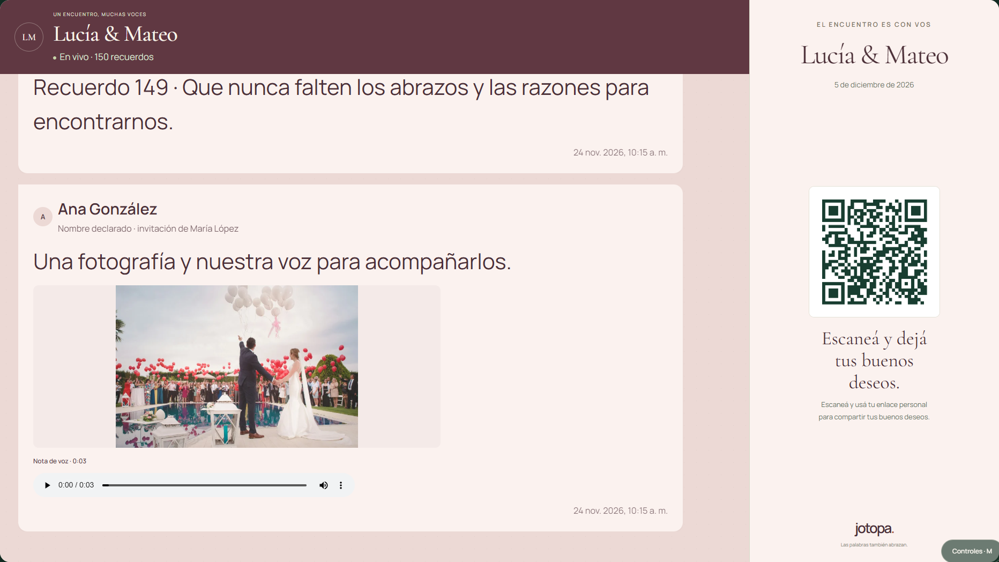
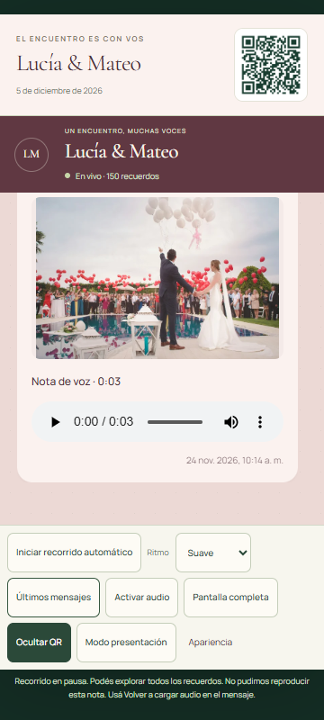
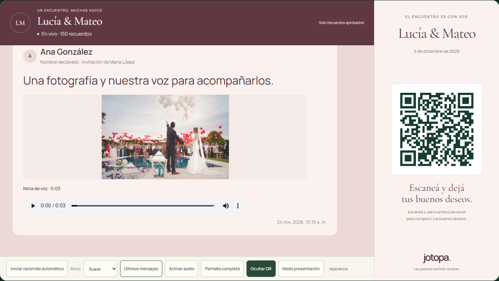
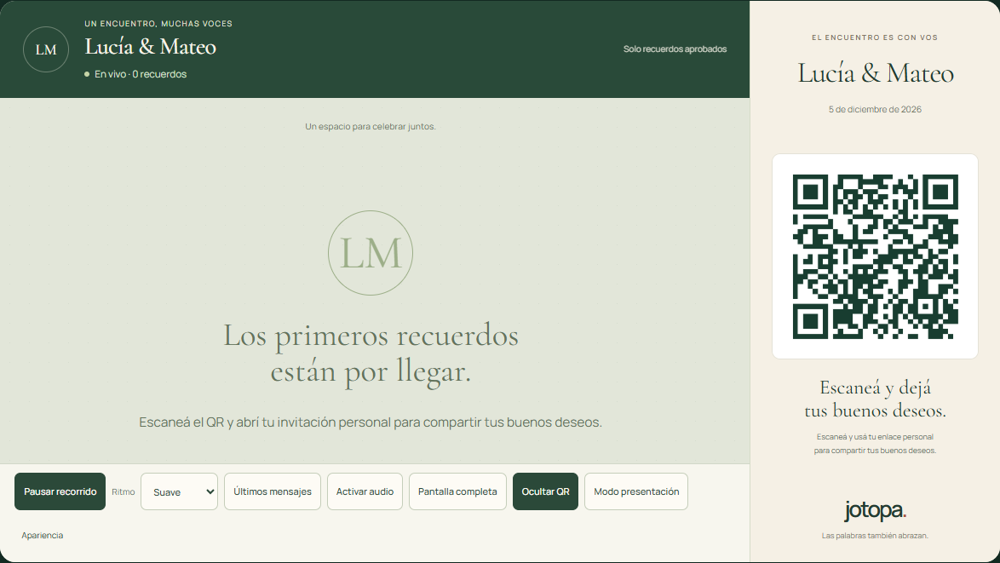

25 DE NOVIEMBRE DE 2026 · PRUEBAS AISLADAS
Respuestas simuladas; no son pruebas de Supabase, RLS ni Storage reales. Chrome renderiza la aplicación real con fixtures exclusivamente en memoria. Los 150 mensajes sirven para probar paginación, reconexión, retirada, duplicados y descarga diferida de medios. No se agregan a la aplicación ni a la base.



